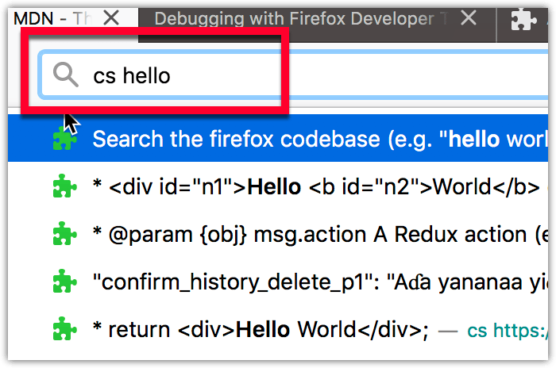

Using the {{WebExtAPIRef("omnibox")}} API, extensions can customize the suggestions offered in the browser address bar's drop-down when the user enters a keyword.

This enables your extension to, for example, search a library of free ebooks or, as in the example above, a repository of code examples.
You tell your extension that it is going to customize the address bar suggestions by including the omnibox key and definition of the trigger keyword in its manifest.json file:
"omnibox": { "keyword" : "cs" }
In the extension's background JavaScript file, using {{WebExtAPIRef("omnibox.setDefaultSuggestion()")}}, you can optionally define the first suggestion to be displayed in the address bar drop-down. Use this to provide a hint on how to use the feature:
browser.omnibox.setDefaultSuggestion({
description: `Search the firefox codebase
(e.g. "hello world" | "path:omnibox.js onInputChanged")`
});
You can then add the code to provide the customized content by listening for {{WebExtAPIRef("omnibox.onInputStarted")}}, which is dispatched when the user has typed the keyword and a space, and {{WebExtAPIRef("omnibox.onInputChanged")}}, which is dispatched whenever the user updates the address bar entry. You can then populate the suggestions, in this case building a search of https://searchfox.org/mozilla-central using the term entered by the user:
browser.omnibox.onInputChanged.addListener((text, addSuggestions) => {
let headers = new Headers({"Accept": "application/json"});
let init = {method: 'GET', headers};
let url = buildSearchURL(text);
let request = new Request(url, init);
fetch(request)
.then(createSuggestionsFromResponse)
.then(addSuggestions);
});
If the extension set a default suggestion using {{WebExtAPIRef("omnibox.setDefaultSuggestion()")}}, then this will appear first in the drop-down.
The extension can then listen for the user clicking one of the suggestions, using {{WebExtAPIRef("omnibox.onInputEntered")}}. If the default suggestion is clicked the user's custom term is returned, otherwise the suggestion's string is returned. This also passes information on the user's browser preferences for handling new links. In the code below the user's custom term is used to create a search, otherwise the suggested URL is opened:
browser.omnibox.onInputEntered.addListener((text, disposition) => {
let url = text;
if (!text.startsWith(SOURCE_URL)) {
// Update the url if the user clicks on the default suggestion.
url = `${SEARCH_URL}?q=${text}`;
}
switch (disposition) {
case "currentTab":
browser.tabs.update({url});
break;
case "newForegroundTab":
browser.tabs.create({url});
break;
case "newBackgroundTab":
browser.tabs.create({url, active: false});
break;
}
});
The webextensions-examples repository on GitHub includes the firefox-code-search example which customizes the search bar.